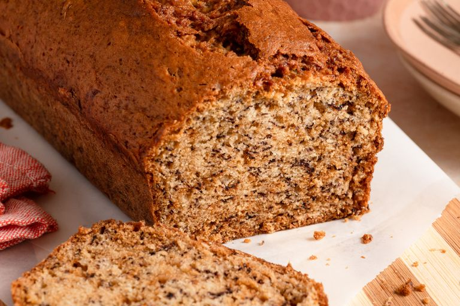

i was always courious to learn how banana bread tasted and how to make it. This time i was lucky enough to find a site that didnt feel too shady, i dont know why but i decided to trust it
it made a bold claim:this is the best banana bread you will ever make. This sparked couriosity in me: how could one random recipe i found online be the best?
So at the end my couriosity had the best of me and yesterday i tried it, and trust me when i say this if it had not be the best i wouldnt tell you about it
Beat sugar and margarine in a bowl until smooth.
in eggs, then bananas.Add flour and baking soda,
stirring just until combined. Pour into the prepared pan.

go back to homepage